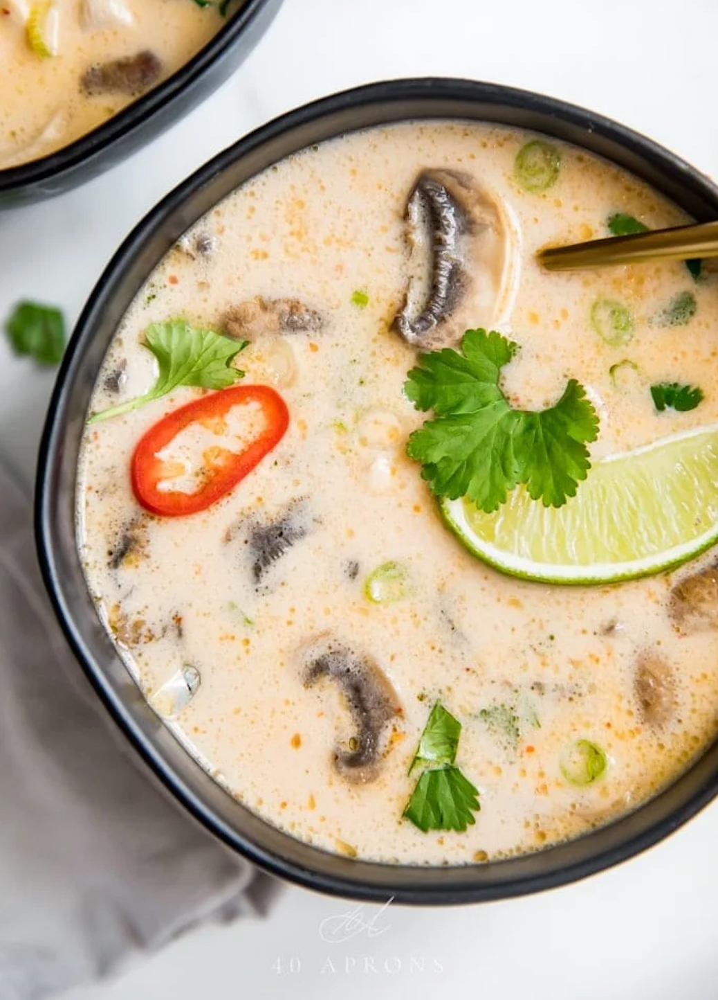

Tom Kha Gai
(translated: boiling,
galangal chicken).

Description
What's galangal? It's part of what makes this soup like no other soup you've had, unless you've had Tom Yum,
which is similar but lacks the creamy coconutty goodness. This soup is the soup by which I judge Thai or Lao
restaurants. When you get the flavors right in this soup, it's a celebration of all the taste profiles (except
bitter): sweet, savory, sour, umami, and home all wrapped up into this tasty, creamy, bright, feels-like-a-hug
soup.
I stick to this recipe the least of any recipe I use, because the final flavor depends on the punchiness of the
ingredients you use. I enjoy experimenting with
this, because the payoff is unmathced when you get it just right.
Ingredients
- 1 tablespoon coconut oil
- half of one onion thinly sliced
- 2 cloves garlic chopped
- half of one red jalapeno pepper sliced; or 1-3 Thai chiles, halved
- 3 ¼-inch slices galangal or ginger
- 1 lemongrass stalk pounded with the side of a knife and cut into 2-inch long pieces
- 2 teaspoons red Thai curry paste
- 4 cups chicken broth see Notes if vegan or on Whole30
- 4 cups canned full-fat coconut cream unsweetened, or full-fat unsweetened coconut milk; see Notes
- 2 medium chicken breasts cut into bite-sized pieces, approximately 1 pound
- 8 ounces white mushroom caps sliced
- 1-2 tablespoons coconut sugar see Notes for Whole30 option
- 1 ½ – 2 tablespoons plus more to taste, see Notes if on Whole30 or vegan
- 2-3 tablespoons fresh lime juice
- 2-3 green onions sliced thin
fresh cilantro chopped, for garnish
Steps
- In a medium pot, heat the coconut oil over medium heat. Add the onion, garlic, jalapeno or chile, galangal
or ginger, lemongrass, and red curry paste and cook, stirring frequently, for 5 minutes, or until onions are
softened. Add chicken broth and bring to a boil. Reduce heat and simmer uncovered for 30 minutes.
- Strain out the aromatics (the garlic, onions, lemongrass, and ginger) and discard. Add in coconut cream or
milk, chicken breast (or tofu or shrimp), and mushrooms. Simmer until chicken breast pieces are just cooked
through, then add fish sauce, coconut aminos (or coconut sugar), and lime juice, plus more of each to taste.
- Cook 2 minutes, then ladle into serving bowls and top with sliced green onions and fresh cilantro.
Notes
- Be sure to use coconut cream or coconut milk. Coco lopez and coconut creamer are not the
same as coconut cream/coconut milk and will not work in this recipe.
- To use shrimp, simply stir in 1 pound of raw shrimp instead of chicken. Simmer until just
cooked through, pink, and no longer translucent.
-
To make it Whole30: Use compliant chicken broth. Use 2 tablespoons coconut aminos instead
of coconut sugar. Use Red Boat fish sauce--this is the only fish sauce I've found to be compliant.
- Make it Vegan/Vegetarian: Use vegetable stock, preferably an Asian variety. Use a 1-pound
block of firm or extra firm tofu (regular or silken) cut into bite-sized cubes. For vegan, use soy sauce (to
taste) instead of fish sauce.
Recipe Credit
Though this recipe has not been modifiied, the original recipe posting can be found here.